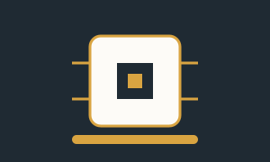
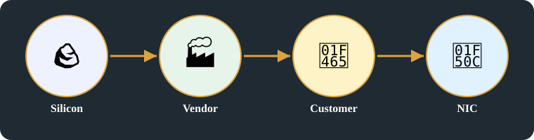

💻 Hardware & Computing · Card C · 3 of 5
Hardware supply and the NIC endpoint
After naming: what physical thing carries those names and addresses.
Original images +
Original pages behind this card, untouched.


Detailed explanation

1. Silicon to supplier
- Silicon becomes a chip, and a chip becomes a vendor’s device: raw silicon is made into a chip by a supplier, and that chip is built into a device by a vendor that a telecom company, a cloud provider, or a business can buy and use.
- Silicon product, government device, business — silicon is made into hardware by suppliers such as Intel, Broadcom, and Nvidia, who supply the chips that telecom companies, cloud providers, and businesses build networks on.
- Market vendors Intel, Broadcom, and Nvidia supply hardware that is controlled by software — the chips in a network device only work because software drives them.
2. Who buys, and the NIC endpoint
- End customers: cloud providers, OEMs, telcos and ISPs, government research labs such as DRDO and NASA, company executives, and IoT devices — all of them buy and use network hardware.
- Direct buyers: cloud providers such as AWS and GCP, OEMs such as Dell, HPE, Lenovo, and Cisco, telcos and ISPs such as AT&T, Verizon, and Jio, government labs, and assemblers — all of them buy devices with a NIC integrated inside, so the device can join a network.
- NIC to PCI, visible via interface: the NIC sits on PCI inside a device, with a driver, user tools, workload, and operating system around it, so a company’s server or a telecom switch can actually send and receive network traffic.
- That device only reaches a customer through an endpoint: the NIC — without a network interface card, a server, a switch, or a phone cannot join a network, no matter how powerful its chip is.
3. Selling under rules
- Sell to customers who follow government rules: a vendor sells a NIC device to customers — telecom companies, cloud providers, and businesses — who must follow government and FCC rules to use it on a public network.
- Selling that endpoint is not just a shipment — it is governed, which is why the NIC chain keeps returning to government rules and to FCC.
- DARPA, TCP/IP, device options, remotes, connections: the defence research network and the TCP/IP protocols that followed it set the options for how devices connect — remotely and locally — on a telecom network.
Summary:
- Silicon becomes a chip, and a chip becomes a vendor’s device: raw silicon is made into a chip by a supplier, and that chip is built into a device by a vendor that a telecom company, a cloud provider, or a business can buy and use.
- That device reaches a customer only through the NIC endpoint: the NIC is the point where a device, a company’s server, and a telecom network actually meet.
- Selling that endpoint is governed, not just shipped: a NIC is not only boxed and sent to a customer — its sale and use are governed by telecom and government rules, which is why the NIC chain keeps returning to FCC.
Key points
- Silicon product, government device, business — to Intel, Broadcom, Nvidia as supplier, hardware.
- End customers: cloud, OEMs, telco / ISP, research by government (DRDO / NASA), C-suite, IoT.
- NIC to PCI, visible via interface; NIC contains; sell to customers who follow government rules; PCI device, driver, user tools, workload, OS.
- Market vendors Intel / Broadcom / Nvidia supply hardware controlled by software.
- Direct buyers: cloud (AWS, GCP), OEMs (Dell, HPE, Lenovo, Cisco), telcos and ISP (AT&T, Verizon, Jio), government labs, assemblers — NIC integrated into devices.
- DARPA, TCP/IP, device options, remotes, connections, as written on the page.
Horizontal links
- NIC links this card to Card D, as a cross-domain link, because the endpoint sold here is the stack that Card D runs inside a machine.
- FCC and government rules link this card to Card B and Card E, as a cross-domain link, because regulation in Card B and product approval in Card E both govern this hardware.
- Vendors to customers links this card to Card E, as a prerequisite, because a product in Card E cannot be built until vendors have supplied customers with the hardware in this card.